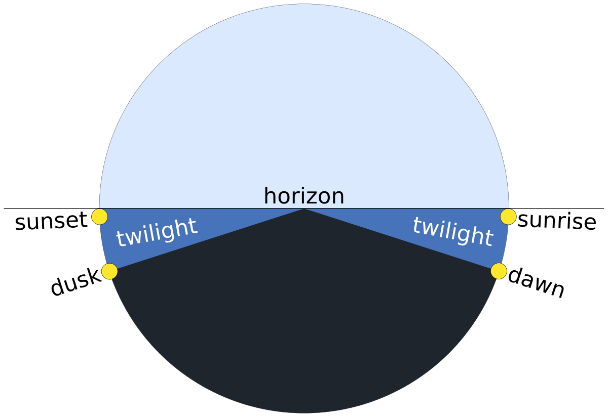
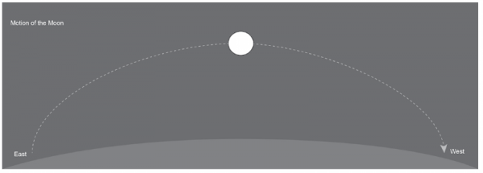

Mandaw is a free online tool that tells you the sunrise and sunset times, the moonrise and moonset times and the moonphases everywhere you go. You can access Mandaw on the website or on the app. It is available all around the globe.
Sunrise and Sunset

The sunrise is the second the top of the sun becomes visible over the eastern horizon. The sunset is the second the top of the sun becomes invisible over the western horizon.
Sunrises ofter occur even before the sun makes it to the horizon because of the Earth's atmosphere refracting the sun's rays, allowing us to see the sun early. Pollitions can often enhance the colour of the sunsets and sunrises which results in the splashes of pinks, purples, reds, and oranges all over the sky.
Twilight occurs when inbetween dawn and sunrise, and dusk and sunset. Twilight seperates the day and the night. There are three stages of twilight: Astronomical Twilight, Nautical Twilight and Civil Twilight. Each twilight is brighter than the last.
Moon Rise and Set

Alike the sun, the moonrise occurs the second the moon becomes visible over the eastern horizon. The moonset occurs the second the top of the moon sinks over the western horizon.
From our point of view, the moon and the sun are the same size but the moon is actually 400 times smaller than the sun.
MoonPhases
There are 8 moon phases: New Moon, Waxing Crescent, First Quarter, Waxing Gibbous, Full Moon, Waning Gibbous, Last Quarter and Waning Crescent. The Moon does not produce its own light, the silvery white glow we see comes from the sun reflecting off of the moon.